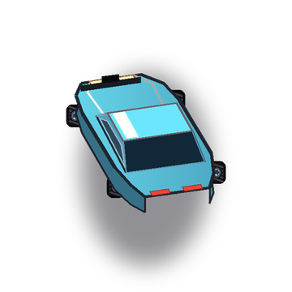

CARICAMENTO CIRCUITO...
Connessione reale via WebSocket a un server da pubblicare separatamente. Questa prima prova supporta Gara veloce con 2–8 posti, inclusi eventuali CPU. Eliminazione online, rating e Grand Prix privato arriveranno in una fase successiva.
CARICAMENTO CIRCUITO...
GARA VELOCE
SELECT LANGUAGE · SELEZIONA LA LINGUA · ELIGE TU IDIOMA
01 · COLAZIONE TURBO
Regola la gara e poi vai in pista. L'auto si sceglie nel Garage.
TINY TRACK RIVALS · OFFLINE
Avanza con le missioni, conquista nuovi veicoli e prepara il tuo garage per i prossimi circuiti.
36 medaglie: Race, Challenge e Mastery su 12 piste. Soglie 9/21/30 e finale The Tiny Grand Prix.
TINY TRACK RIVALS
AUTO DISPONIBILI

TINY TRACK RIVALS